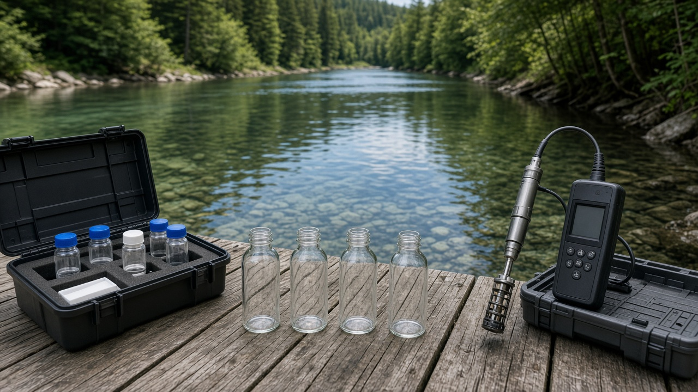
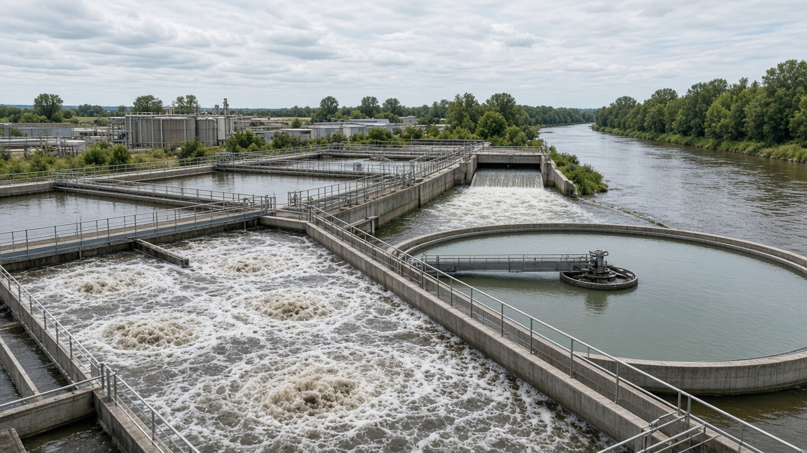
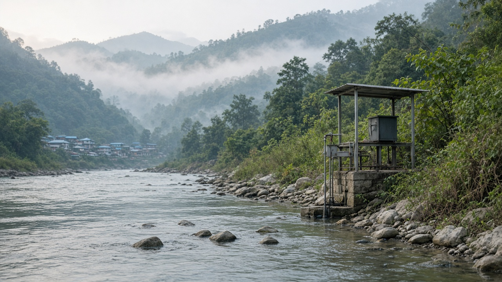

Water Quality Monitoring and Pollution Control
Published on August 8, 2026

Water quality monitoring is the systematic measurement and analysis of physical, chemical, and biological characteristics of water bodies to determine whether they are safe for drinking, irrigation, aquatic life, and recreation. Parameters such as turbidity, dissolved oxygen, pH, nutrient levels, heavy metals, pathogens, and emerging contaminants like microplastics and pharmaceutical residues reveal the health of a river, lake, or groundwater source. Regular monitoring creates baselines that help detect pollution events, track long-term degradation, and evaluate whether treatment and regulatory measures are working effectively across watersheds and urban supply systems.
Water pollution originates from many sources including untreated sewage, industrial effluent, agricultural runoff carrying fertilizers and pesticides, mining waste, solid waste dumping along riverbanks, and sediment from deforested slopes. In rapidly urbanizing areas, aging pipe networks and inadequate wastewater treatment plants discharge contaminants directly into rivers that downstream communities rely on for daily use. Pollution control requires a combination of source reduction, end-of-pipe treatment, enforcement of discharge standards, and public investment in sanitation infrastructure. Community-led river cleanup campaigns and citizen science water testing programs also play a valuable role in raising awareness and holding institutions accountable.
Effective pollution control depends on institutional coordination among municipalities, environmental agencies, health departments, and industries, supported by transparent public reporting of water quality data. Advanced tools such as online sensor networks, remote sensing of algal blooms, and geographic information systems help prioritize interventions where contamination poses the greatest risk to human health and biodiversity. Protecting water quality is not merely an environmental concern; it is a foundation of public health, food safety, and economic productivity. Societies that invest in monitoring and pollution prevention safeguard one of their most essential resources for generations to come.

पानी गुणस्तर निगरानी भनेको पानीका भौतिक, रासायनिक, र जैविक विशेषताहरूको व्यवस्थित मापन र विश्लेषण हो, जसले पिउने, सिंचाइ, जलीय जीवन, र मनोरञ्जनका लागि सुरक्षित छ कि छैन भनेर निर्धारण गर्छ। धुंधलापन, घुलिएको अक्सिजन, pH, पोषक तत्व, भारी धातु, रोगजनक, र माइक्रोप्लास्टिक तथा औषधि अवशेष जस्ता उदीयमान प्रदूषकहरूले नदी, ताल, वा भू-जल स्रोतको स्वास्थ्य देखाउँछन्। नियमित निगरानीले आधार रेखा सिर्जना गर्छ जसले प्रदूषण घटनाहरू पत्ता लगाउन, दीर्घकालीन क्षय ट्र्याक गर्न, र उपचार तथा नियामक उपायहरू जलाधार र शहरी आपूर्ति प्रणालीमा प्रभावकारी छन् कि छैनन् मूल्यांकन गर्न मद्दत गर्छ।
पानी प्रदूषण धेरै स्रोतबाट उत्पन्न हुन्छ, जस्तै उपचार नगरिएको झाडपखाला, औद्योगिक अपशिष्ट, मल र कीटनाशक बोकेर आउने कृषि बहाव, खानी अपशिष्ट, नदी किनारमा ठोस फोहोर फाल्ने, र वन काटिएका ढलानबाट आउने तलउकास। छिटो शहरीकरण हुँदै गएका क्षेत्रहरूमा, पुराना पाइप नेटवर्क र अपर्याप्त झाडपखाला उपचार केन्द्रहरूले प्रदूषक सिधै नदीमा छोड्छन्, जुन तल्लो भागका समुदायहरू दैनिक प्रयोगका लागि निर्भर छन्। प्रदूषण नियन्त्रणका लागि स्रोत कमी, अन्त्य-पाइप उपचार, निकास मापदण्ड कार्यान्वयन, र स्वच्छता पूर्वाधारमा सार्वजनिक लगानीको संयोजन आवश्यक छ। सामुदायिक नदी सफाइ अभियान र नागरिक विज्ञान पानी परीक्षण कार्यक्रमहरूले जागरूकता बढाउन र संस्थाहरू जवाफदेही बनाउन महत्त्वपूर्ण भूमिका खेल्छन्।
प्रभावकारी प्रदूषण नियन्त्रण नगरपालिका, पर्यावरणीय निकाय, स्वास्थ्य विभाग, र उद्योगहरू बीच संस्थागत समन्वयमा निर्भर गर्दछ, जसलाई पानी गुणस्तर डाटाको पारदर्शी सार्वजनिक प्रतिवेदनले समर्थन गर्छ। अनलाइन सेन्सर नेटवर्क, शैवाल फूलको दूर संवेदन, र भौगोलिक सूचना प्रणाली जस्ता उन्नत उपकरणहरूले मानव स्वास्थ्य र जैविक विविधतामा सबैभन्दा ठूलो जोखिम पार्ने स्थानमा हस्तक्षेप प्राथमिकता दिन मद्दत गर्छ। पानी गुणस्तर संरक्षण केवल पर्यावरणीय चिन्ता मात्र होइन; यो सार्वजनिक स्वास्थ्य, खाद्य सुरक्षा, र आर्थिक उत्पादकताको आधार हो। निगरानी र प्रदूषण रोकथाममा लगानी गर्ने समाजहरूले आउने पुस्ताका लागि आफ्नो सबैभन्दा आवश्यक स्रोत संरक्षण गर्छन्।

जल गुणवत्ता निगरानी जल निकायों की भौतिक, रासायनिक, और जैविक विशेषताओं का व्यवस्थित मापन और विश्लेषण है, ताकि यह निर्धारित किया जा सके कि वे पीने, सिंचाई, जलीय जीवन, और मनोरंजन के लिए सुरक्षित हैं या नहीं। धुंधलापन, घुलित ऑक्सीजन, pH, पोषक तत्व, भारी धातुएँ, रोगजनक, और माइक्रोप्लास्टिक तथा औषध अवशेष जैसे उभरते प्रदूषक नदी, झील, या भूजल स्रोत के स्वास्थ्य को दर्शाते हैं। नियमित निगरानी आधार रेखाएँ बनाती है जो प्रदूषण की घटनाओं का पता लगाने, दीर्घकालिक क्षय को ट्रैक करने, और उपचार तथा नियामक उपायों की प्रभावकारिता का मूल्यांकन करने में मदद करती है।
जल प्रदूषण कई स्रोतों से उत्पन्न होता है, जिनमें अनुपचारित सीवेज, औद्योगिक अपशिष्ट, उर्वरक और कीटनाशक ले जाने वाला कृषि अपवाह, खनन अपशिष्ट, नदी किनारों पर ठोस कचरा फेंकना, और वन कटाई से आने वाली तलछट शामिल हैं। तेजी से शहरीकरण वाले क्षेत्रों में, पुराने पाइप नेटवर्क और अपर्याप्त अपशिष्ट जल उपचार संयंत्र प्रदूषक सीधे नदियों में छोड़ते हैं, जिन पर नीचे के समुदाय दैनिक उपयोग के लिए निर्भर हैं। प्रदूषण नियंत्रण के लिए स्रोत में कमी, अंत-पाइप उपचार, निर्वहन मानकों का प्रवर्तन, और स्वच्छता बुनियादी ढांचे में सार्वजनिक निवेश का संयोजन आवश्यक है। सामुदायिक नदी सफाई अभियान और नागरिक विज्ञान जल परीक्षण कार्यक्रम जागरूकता बढ़ाने और संस्थानों को जवाबदेह बनाने में महत्वपूर्ण भूमिका निभाते हैं।
प्रभावी प्रदूषण नियंत्रण नगरपालिकाओं, पर्यावरणीय एजेंसियों, स्वास्थ्य विभागों, और उद्योगों के बीच संस्थागत समन्वय पर निर्भर करता है, जिसे जल गुणवत्ता डेटा की पारदर्शी सार्वजनिक रिपोर्टिंग द्वारा समर्थित किया जाता है। ऑनलाइन सेंसर नेटवर्क, शैवाल फूल की दूर संवेदन, और भौगोलिक सूचना प्रणाली जैसे उन्नत उपकरण उन हस्तक्षेपों को प्राथमिकता देने में मदद करते हैं जहाँ संदूषण मानव स्वास्थ्य और जैव विविधता के लिए सबसे बड़ा जोखिम पैदा करता है। जल गुणवत्ता की रक्षा केवल पर्यावरणीय चिंता नहीं है; यह सार्वजनिक स्वास्थ्य, खाद्य सुरक्षा, और आर्थिक उत्पादकता की नींव है। निगरानी और प्रदूषण रोकथाम में निवेश करने वाले समाज आने वाली पीढ़ियों के लिए अपने सबसे आवश्यक संसाधनों की रक्षा करते हैं।